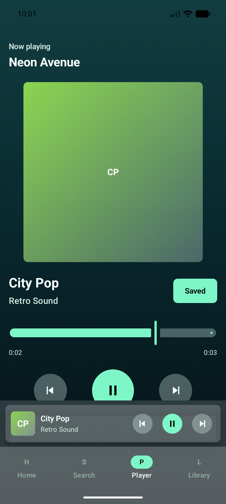
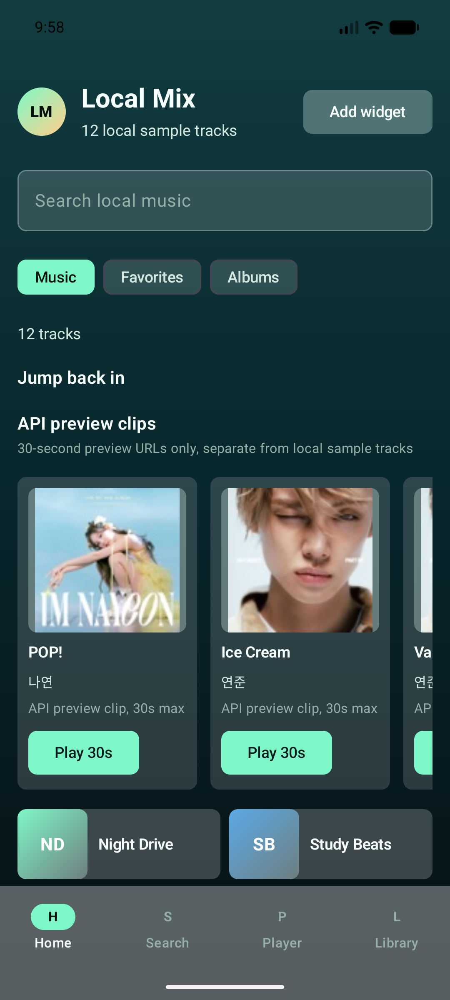
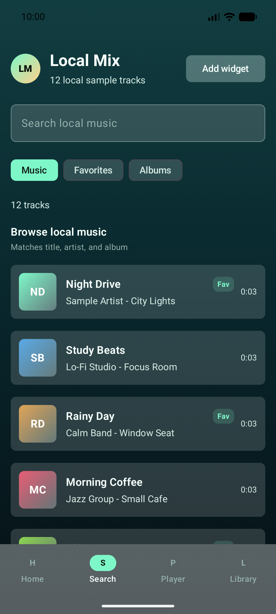
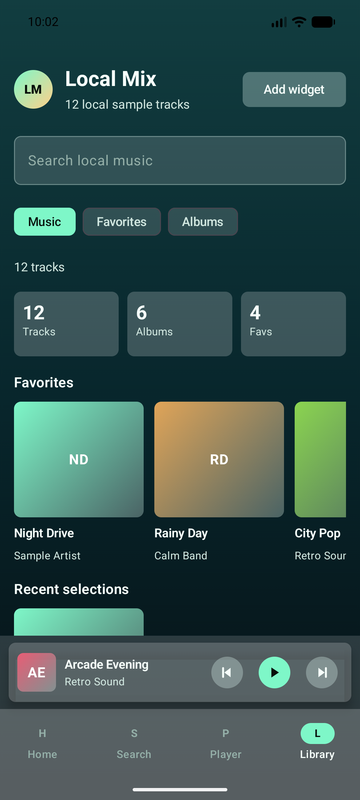
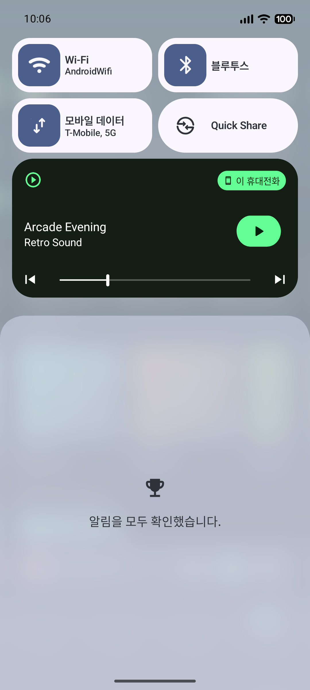
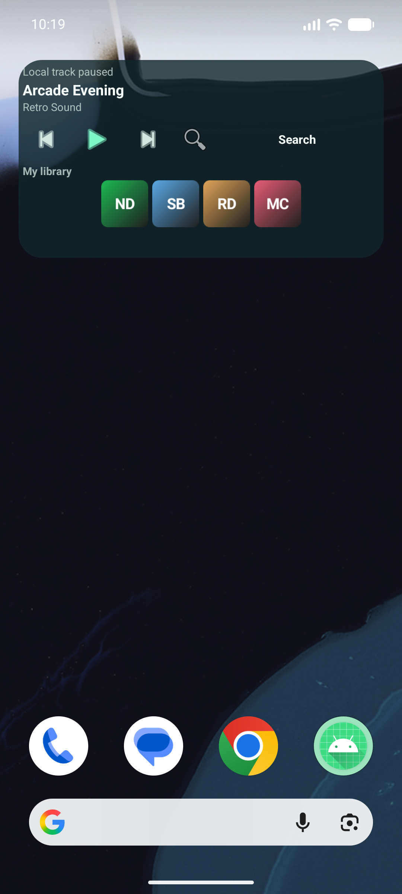

앱에 포함된 로컬 WAV 샘플
Kotlin · Jetpack Compose · Media3
화면을 떠나도 음악은 이어집니다
로컬 샘플 음악을 중심으로 탐색, 검색, 상세 재생, 백그라운드 서비스, 알림과 홈 위젯까지 하나의 재생 흐름으로 연결한 Android 음악 플레이어입니다.
12 bundled WAV
4 destinations
30s API preview
MediaSessionService

프로젝트 범위
Spotify 계정 없이 핵심 음악 앱 경험을 구현했습니다
실제 Spotify API, 로그인, 전체 음원 스트리밍, 다운로드, 결제는 사용하지 않습니다. 앱에 포함된 WAV가 기본 재생원이며 온라인 기능은 metadata와 허용된 30초 preview로 제한합니다.
Home · Search · Player · Library
HTTPS API preview 최대 길이
최근 선택으로 유지하는 최대 곡 수
사용자 흐름
한 번의 선택이 네 화면을 연결합니다





화면 이동 설계
화면 안은 Navigation, Android 경계는 Intent
Navigation Compose
- 같은 `MainActivity`의 Composable 화면 이동
- 직렬화 가능한 type-safe destination 4개
- `launchSingleTop`, `saveState`, `restoreState`
- Home → Search → Player → Library
Intent · PendingIntent
- Activity, Service, Broadcast 경계 이동
- 위젯 검색 → `WidgetMusicSearchActivity`
- 위젯 제어 → Broadcast → foreground service
- Intent extra로 MainActivity의 Search 시작 가능
단방향 상태 흐름
UI와 재생 엔진을 분리하고 실제 상태를 다시 돌려받습니다
Compose는 사용자 경험을, ViewModel은 화면 상태를, MediaSessionService는 실제 재생을 담당합니다. 알림·위젯에서 생긴 변화도 Player 상태를 통해 다시 UI로 동기화됩니다.
Compose UI
입력과 화면 렌더링
입력과 화면 렌더링
→
ViewModel · StateFlow
검색, 필터, 선택, queue
검색, 필터, 선택, queue
LocalPlaybackController
MediaController와 상태 변환
MediaController와 상태 변환
→
MediaSessionService
ExoPlayer, 알림, 위젯 상태
ExoPlayer, 알림, 위젯 상태
DataStore
즐겨찾기와 최근 선택
즐겨찾기와 최근 선택
↔
SharedPreferences
위젯 마지막 표시 상태
위젯 마지막 표시 상태
검색과 온라인 preview
로컬 검색은 즉시, 온라인 요청은 늦춰서 정확하게
즉시 필터
제목, 아티스트, 앨범을 대소문자 구분 없이 바로 필터링합니다.
2글자 · 1,000ms
온라인 검색은 짧은 입력을 무시하고 이전 Job을 취소해 최신 결과만 반영합니다.
iTunes + MusicBrainz
부분 실패를 허용하며 최종 12개까지 표시합니다. MusicBrainz는 metadata-only입니다.
HTTPS preview만 재생
iTunes 결과의 재생 가능한 URL만 30초 `Music`으로 변환하고 로컬 queue와 분리합니다.
다운로드하지 않음
온라인 결과는 metadata와 preview 재생에만 사용하며 로컬 음원으로 저장하지 않습니다.
Media3 재생 구조
30초 제한은 UI 문구가 아니라 서비스 정책입니다
MediaItem
로컬은 `android.resource://`, preview는 HTTPS URI
MediaController
재생, 일시정지, 이전·다음, seek 명령
MediaSessionService
Activity와 분리된 ExoPlayer 소유
시스템 UI
알림, 잠금 화면, 위젯이 같은 세션 제어
preview는 서비스가 500ms마다 위치를 확인합니다. 30초에 도달하면 다음 preview로 이동하고, 마지막이면 일시정지한 뒤 0초로 되돌립니다.
앱 밖 제어
알림과 위젯도 같은 재생 엔진을 사용합니다
MediaSession metadata
곡 제목과 `아티스트 - 앨범`, 이전·재생/일시정지·다음 제어를 제공합니다.
홈 화면 위젯
현재 곡, 이전·다음, 목표 상태 기반 play/pause, 검색 진입을 제공합니다.
크기별 UI
높이가 작으면 보조 정보를 숨기고, 큰 위젯에서는 앞 4곡을 바로 재생합니다.
Preferences DataStore
로컬 즐겨찾기와 최근 선택 최대 8개를 저장합니다.
Widget SharedPreferences
마지막 곡과 preview metadata, 재생 표시 상태를 저장합니다.
사용감과 검증
기능을 연결한 뒤, 조작의 디테일까지 다듬었습니다
ViewModel, 검색, repository, 위젯 필터 JVM 테스트
패키지와 위젯 pause 상태 instrumented 테스트
앨범 artwork swipe 전환 확정 기준
재생·저장 버튼의 짧은 press feedback
Scrubbing
slider drag 중 외부 progress가 손가락 위치를 덮지 않도록 분리합니다.
TalkBack
상태 설명, live region, artwork 이전·다음 custom action을 제공합니다.
다음 검증
장시간 실기기 재생, 알림·위젯 E2E, Compose navigation UI 테스트가 남았습니다.
3분 시연
탐색에서 시스템 UI까지 한 흐름으로 보여줍니다
- Home
12개 로컬 곡과 API preview 카드, Add widget 버튼을 소개합니다. - Search
`night`를 입력해 로컬 즉시 필터와 온라인 loading을 보여줍니다. - Player
곡 선택 후 pause, next, artwork swipe, seek, Saved 상태를 시연합니다. - Library
즐겨찾기와 최근 선택이 DataStore 상태로 연결되는 것을 보여줍니다. - Notification
앱을 벗어나 알림에서 이전·일시정지·다음을 제어합니다. - Widget
위젯 검색 Activity와 foreground service Intent 흐름을 설명합니다.
마무리
UI · 상태 · 서비스 · 시스템 UI를 하나의 playback flow로 연결했습니다
화면만 닮은 음악 앱이 아니라, Compose 안의 탐색부터 MediaSession 기반 백그라운드 재생, 알림과 위젯까지 Android 구성 요소의 역할을 나눠 구현한 프로젝트입니다.
현재 소스 기준 · 2026-07-13 · Spotify API/로그인/다운로드/결제 미사용